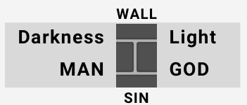
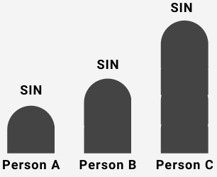
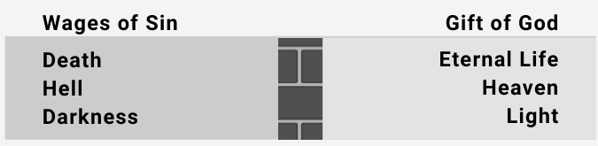
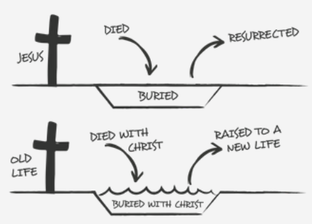

1 PETER 2:9-10
| DARKNESS Not a People of God No Mercy |
LIGHT People of God Mercy |
| Lost Not a Christian Not a Disciple |
Saved Christian Disciple |
- Every person is either in the darkness or the light. There is no twilight zone.
- Where are you?
DARKNESS
A. ISAIAH 59:1-2

- Sin separates us from God.
- In order for a man to have a relationship with God the wall must be broken down — sin must be forgiven.
- The point in time that sin is forgiven is the point in time a person is saved.
B. ROMANS 3:23-25
- Who has sinned? Everyone!
- Who is further away from God: a person who sins a little, or a person who sins a lot? All are equal, all lost. Therefore a good moral life does not save you. You cannot earn your salvation by your good deeds.
- Faith in the blood of Jesus saves you (v. 25).

C. What is sin?
- Galatians 5:19-21 (sins of commission)
- 2 Timothy 3:1-5 (sins of commission)
- James 4:17 (sins of omission)
D. What is the eternal consequence of sin? - ROMANS 6:23

LIGHT
A JOHN 3:1-7
- Born again (v. 3)
- Born of water and Spirit (v. 5)
- Born again. (v. 7)
B. Personal Decision as an Adult
C. What message must one believe to be saved? Acts 2:22-24
- Jesus is from God. (v. 22)
- Jesus raised physically from the dead. (v. 24)
- Everyone is responsible for the crucifixion of Christ. (v. 23) All have sinned. (Romans 3:23)
D. Response of People - ACTS 2:36-37
- Cut to the heart
- What shall we do?
E. Once the people believed, what did they do? Acts 2:38-42
- Repent (Greek = to turn)
- Be baptized (Greek = to be immersed)
- Sin forgiven. Therefore this is the point in time a person is saved.
- Holy Spirit given to each who responded — power to live as God commands.
F. Baptism: ROMANS 6:1-4
- Baptism is the sharing (a participation) in the death, burial and resurrection of Christ. (More than just a symbol.)

| DARKNESS Sin Separates from God |
LIGHT Acts 2:38 Sin is Forgiven |
| Born Again Of Water and Spirit John 3:5 |
Acts 2:38 Water = Baptism Spirit = Received at Baptism |
| Romans 3:25 Faith in the Blood of Jesus Saves Us |
Jesus shed his blood when he died. In baptism we share by faith in the death, burial and resurrection of Jesus. Thus we contact the blood in baptism and are forgiven of our sins and SAVED! |
TRADITIONS/FALSE DOCTRINES - MATTHEW 15:6-9
A. Infant Baptism
- Personal faith is needed (Colossians 2:12)
- Began approximately third century A.D.
- Original sin
- Ezekiel 18:20
- Became “church doctrine” in 549 A.D
B. Praying Jesus into your heart
- Revelation 3:20 — taken out of context. This verse is addressed to Christians.
- Began in the early 1800s in America.
Sinful nature: Suggest to the individual with whom you are studying that he or she write out and be specific about various sins that they have committed during their life. This is so they might see the gravity and magnitude of their sin. This is confidential and should only be shared with those who are studying with the person.